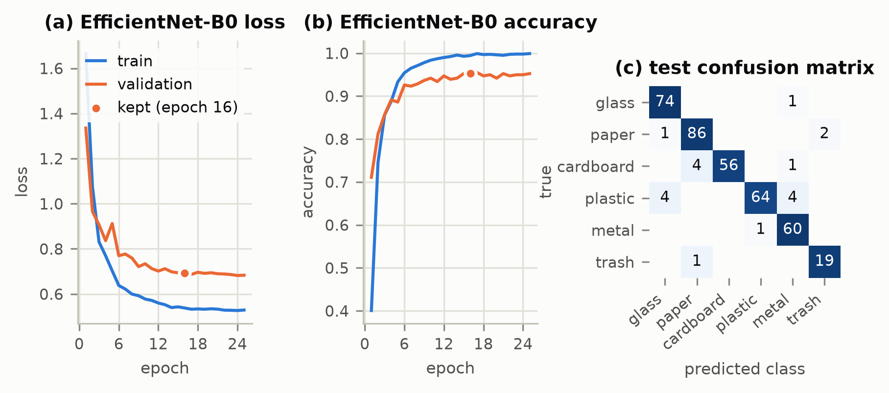
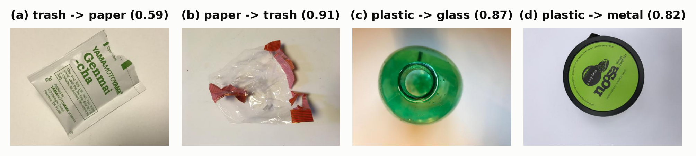

Smart bins and material-recovery facilities must separate dry waste into recyclable streams without manual handling; every mis-sorted item loses recyclable material or contaminates a bale. The task is to classify a photo of a single waste item as glass, paper, cardboard, plastic, metal or trash. Because trash is only 5.4 % of the data, success is judged by test macro-F1 (all classes weigh equally) and per-class recall and F1, especially for trash, with accuracy reported alongside.
Source: TrashNet, dataset-resized (github.com/garythung/trashnet), full set of 2,527 RGB images (512×384): glass 501, paper 594, cardboard 403, plastic 482, metal 410, trash 137 (imbalance 4.3 : 1). Audit: MD5 hashing found 3 identical photos filed under two classes (e.g. metal91 = glass115); all 6 copies were removed, leaving 2,521 images. 19 near-duplicate pairs (same object shot twice) were kept within one split. Split: stratified, group-aware 70/15/15, seed 42: 1,766 train / 377 validation / 378 test (trash 96/21/20), saved in results/split.csv. Pre-processing: resize to 224×224, ImageNet mean/std normalisation. Augmentation (training only): rotation ±20°, random resized crop (60–100 % area), horizontal/vertical flips, mild colour jitter. Imbalance: inverse-frequency class weights in the loss (trash 3.07, paper 0.71), checkpoint selection on validation macro-F1, and an ablation without the weights.
Three CNNs were compared. (A) WasteNet, designed and trained from scratch: five stages of two 3×3 conv–BatchNorm–ReLU layers + 2×2 max-pool (32→384 channels, 224→7 px), global average pooling, dropout 0.4 and a linear layer (3.39 M parameters). (B) ResNet-50 (23.5 M) and (C) EfficientNet-B0 (4.0 M), pre-trained on ImageNet: the 1000-way head was replaced by dropout 0.3 + linear(6), and all layers were fine-tuned (none frozen), the new head with a 10× higher learning rate. Loss: class-weighted cross-entropy with label smoothing 0.1. Optimiser: AdamW, one-cycle schedule (15 % warm-up, cosine decay), mixed precision on an RTX 4050 GPU. The weights with the best validation macro-F1 were kept, with early stopping on that metric (Table 1).
Table 1. Hyper-parameters (batch size 32 and input 224×224 for all models).
| Model | Initialisation | Peak LR (backbone / head) | Weight decay | Max epochs | Early-stop patience |
|---|---|---|---|---|---|
| A. WasteNet | random | 3e-3 | 0.05 | 60 | 15 |
| B. ResNet-50 | ImageNet | 2e-4 / 2e-3 | 0.01 | 25 | 10 |
| C. EfficientNet-B0 | ImageNet | 5e-4 / 3e-3 | 0.01 | 25 | 10 |
All numbers are from the held-out test set (378 images, 20 trash). The model selected on validation macro-F1, EfficientNet-B0, reaches accuracy 0.95 and macro-F1 0.95, with trash recall 0.95 (19 of 20); per-class F1: glass 0.96, paper 0.96, cardboard 0.96, plastic 0.93, metal 0.94, trash 0.93. ResNet-50 scored slightly higher on test, but selection must use validation data and the CIs overlap.
Table 2. Test-set results (95 % bootstrap CI in brackets; CPU latency for one image on 4 threads).
| Model | Accuracy | Macro-F1 [95% CI] | Trash P | Trash R | Trash F1 | CPU ms | Train min |
|---|---|---|---|---|---|---|---|
| A. WasteNet (scratch) | 0.82 | 0.80 [0.75, 0.84] | 0.49 | 0.90 | 0.63 | 38.9 | 5.8 |
| B. ResNet-50 | 0.97 | 0.97 [0.94, 0.98] | 0.95 | 0.95 | 0.95 | 45.8 | 3.6 |
| C. EfficientNet-B0 (selected) | 0.95 | 0.95 [0.92, 0.97] | 0.90 | 0.95 | 0.93 | 18.5 | 3.0 |
| C, unweighted loss (ablation) | 0.96 | 0.95 [0.93, 0.98] | 0.95 | 0.95 | 0.95 | 18.5 | 2.7 |

Confusions (Fig. 1c): plastic is the hardest class (recall 0.89; 4 → glass, 4 → metal), then cardboard (0.92; 4 → paper). These are material look-alikes: PET bottles share shape and gloss with glass (Fig. 2c), lids resemble cans (Fig. 2d), white paperboard looks like paper. Trash errors: one of 20 was missed, a printed tea sachet predicted as paper (Fig. 2a). Trash is defined by recyclability rather than material, and in a t-SNE of the features this sachet lies inside the paper cluster. The 2 false trash alarms show a clear plastic bag that TrashNet labels paper (Fig. 2b), i.e. label noise. Grad-CAM shows correct trash predictions focus on the wrapper, not the background. Fitting: pre-trained models reach about 1.00 training vs. 0.95 validation accuracy with a flat validation loss, i.e. mild over-fitting contained by augmentation, dropout, weight decay and best-epoch selection; the scratch CNN under-fits (0.79 vs. 0.76). Imbalance (specific challenge): without class weights, EfficientNet-B0 gave trash F1 0.95 vs. 0.93 (1 vs. 2 false alarms), but validation macro-F1 0.94 vs. 0.95. These 1–3-image differences lie inside the CIs, so for pre-trained features (which form a separate trash cluster) the weights have no measurable effect; for the scratch CNN they raised trash recall (0.90) at the cost of precision (0.49).

The model could run in a camera-equipped smart bin or a conveyor pre-sorter: EfficientNet-B0 needs 4.0 M parameters (16 MB) and 18.5 ms per image on 4 CPU threads. It is not deployable yet: TrashNet shows one clean item on a white board, whereas real waste is dirty, cluttered and overlapping, and its US packaging may not represent Indian waste. Only 20 trash test images exist (trash-F1 CI 0.83–1.00). Since errors cost lost recyclables or contaminated bales, low-confidence items (wrong predictions average 0.59 confidence vs. 0.87 for correct ones) should go to manual sorting; bin cameras that may capture people should process images on the device without storing them.
A fine-tuned EfficientNet-B0 sorts single waste items with test macro-F1 0.95 and trash recall 0.95, far above a CNN trained from scratch (macro-F1 0.80). Next, I would fine-tune it on photos taken inside a real bin (clutter, several items, dirt) and add a confidence-based reject option for uncertain items.